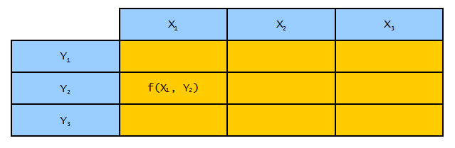

|
|
|


函数表
函数表是期望一个或两个输入值（1D 或 2D 表）并返回一个对应输出值的表格。
示例 1D 表格
角度系数（）根据指定的（）确定。例如：如果输入值 提供的输出值为 。
-- 表类型：函数表；输出变量： | |||||
: | |||||
-- INPUT X angle 定义了输入参数 angle; | |||||
-- 中间值将进行线性插值 | |||||
INPUT X angle TREAT LINEAR | |||||
-- 数据内容：第一行：输入值，第二行：输出值 | |||||
DATA | |||||
0 | 30 | 60 | 90 | . . . | |
0.1 | 0.25 | .45 | .078 | . . . | |
END | |||||
是一个关键字，即由表解释器保留的单词，其后跟一个参数 ，该参数为 输入参数指定一个维度。关键字 及其关联参数 指定中间值应线性插值。输出值 将根据 变量的值确定。1D 表中（ 与 之间）数据内容的第一行对应输入值 ，第二行对应输出值。因此，1D 表中的数据内容始终是一个（2 × n）矩阵，即两行必须包含相同数量的值。
二维表示例
额定功率根据转速和带轮直径定义。例如：如果输入值 和 提供的输出值为 。
-- 表类型：函数表；输出变量： | ||||||
: | ||||||
-- INPUT X diameter 定义输入参数 ； | ||||||
-- INPUT Y speed 定义输入参数 ； | ||||||
-- 两个维度中的中间值将进行线性插值 | ||||||
INPUT X angle TREAT LINEAR | ||||||
INPUT Y Speed TREAT LINEAR | ||||||
-- 数据内容：（参见"示例：过盈配合计算"章） | ||||||
DATA | ||||||
50 | 100 | 200 | 300 | . . . | ||
50 | 4 | 7 | 12 | 25 | . . . | |
75 | 12 | 25 | 30 | 35 | . . . | |
. . . | . . . | . . . | . . . | . . . | . . . | |
END | ||||||
此处，变量 通过输入变量 和 定义。沿列（Y）向下延伸的中间值应进行线性插值。跨行（X）同理。表中的第一行对应于 输入变量的值。第一列对应于 输入变量的值。位于输入值相交点处的值是对应于输出变量的值（参见图 9.4）。

图 9.4：二维表格的数据结构
可以使用这种方法来定义一个反向表格。假设在用户的 皮带目录中，显示功率输出的表格第一行显示速度，第一列显示直径，那么用户就不需要将表格翻转。相反，只需在表格标题中更改赋值（即将 替换为 ）。
Functions tables
Functions tables are tables that expect one or two input values (1D or 2D table) and which return exactly one corresponding value.
Example 1D table
The angle coefficient () is determined on the basis of a specified (). For example: if the input value supplies an output value of .
-- table type: Functions table; output variable: | |||||
: | |||||
-- INPUT X angle defines the input parameter angle; | |||||
-- interim values will be interpolated linearly | |||||
INPUT X angle TREAT LINEAR | |||||
-- Data content: 1st line: input values, 2nd line: output values | |||||
DATA | |||||
0 | 30 | 60 | 90 | . . . | |
0.1 | 0.25 | .45 | .078 | . . . | |
END | |||||
is a key word, i.e. a word that is reserved by the Table Interpreter, and is followed by an argument , which assigns a dimension to the input parameter. The key word , with associated argument, specifies that interim values are to be interpolated linearly. The output value will determined using the value of the variable. The first row of data content in the 1D table (between and ) corresponds to the input value , and the second row corresponds to the output value. The data content in a 1D table is therefore always a (2 × n) matrix, i.e. both rows must contain the same number of values.
Example of a 2D table
The nominal power is defined on the basis of the speed and the sheave diameter. For example: if the input values and supply an output value .
-- table type: Functions table; output variable: | ||||||
: | ||||||
-- INPUT X diameter defines the input parameter ; | ||||||
-- INPUT Y speed defines the input parameter ; | ||||||
-- interim values will be interpolated linearly in both dimensions | ||||||
INPUT X angle TREAT LINEAR | ||||||
INPUT Y Speed TREAT LINEAR | ||||||
-- Data content: (see chapter Example: Interference fit calculation) | ||||||
DATA | ||||||
50 | 100 | 200 | 300 | . . . | ||
50 | 4 | 7 | 12 | 25 | . . . | |
75 | 12 | 25 | 30 | 35 | . . . | |
. . . | . . . | . . . | . . . | . . . | . . . | |
END | ||||||
Here, the variable is defined with the input variables and . Interim values running down the columns (Y) should be interpolated linearly. The same applies across the rows (X). The first row in the table corresponds to the values of the entry variables. The first column corresponds to the values of the entry variables. The values placed at the points where the entry values intersect are values which correspond to the output variables (see Figure 9.4).
Figure 9.4: Data schema of 2D tables
If would be possible to use this method to define an inverse table. Assuming that, in your belt catalog, the table displaying power output shows the speed in the first row, and the diameter in the first column, then there is no need for you to turn your table upside down. Instead, simply change the assignment in the table header (i.e. replace with ).